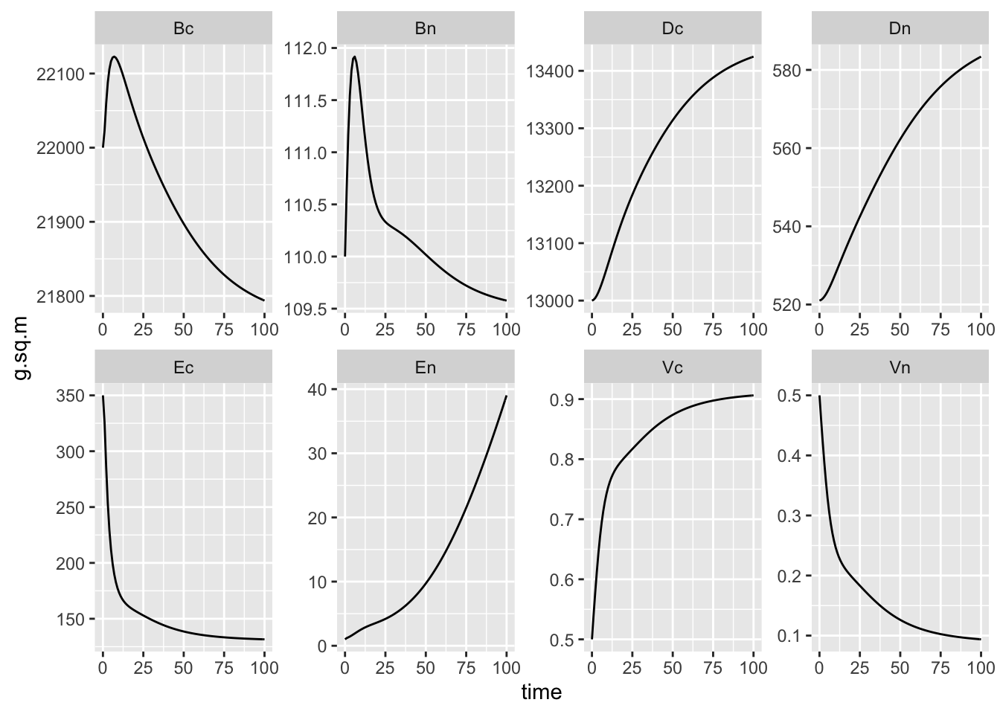

5 Multiple Element Limitation
5.1 Rastetter et al. 1997
(???) proposed a model of multiple-element limitation of vegetation growth (MEL). (???) extended that to include soil pools. We replicate this here. It is similar to our model of (Bormann, Likens, and Melillo 1977), but now includes both carbon and nitrogen.2
By now, you’ve had some practice working with models, so take a gander at this one (Fig. 5.1).
Figure 5.1: Fig. 1 from Rastetter et al. 1997. Variables \(B\), \(E\), and \(D\) elements in vegetation biomass, inorganic form (e.g., soil solution, or atmospheric CO\(_2\)), and organic form in soil detritus. Variable \(V_i\) is allocation related to nutrient acquistion. \(U\) is uptake by vegetation or microbes in detritus (broadly defined), \(R_N\) is deposition, and \(L_N\) is loss via leaching or denitrification. \(R\) is renewal into the inorganic pools. Other terms are explained in the Table below.
Figure 5.2: Table 1 (Rastetter et al 1997).
MEL uses the parameter \(A\) for “acclimation”, which we can think of as compensation by vegetation. Acclimation has a perfectly good meaning in ecophysiology, which is short- to near-term reversible physiological adjustment in response to changing conditions. In MEL “acclimation” means shifts in the relative rates of C and N accumulation in vegetation, resulting in and from changes in the C:N ratio of vegetation. This could happen through physiological, ecological, and evolutionary changes in plant species composition, ratios of root, stem, leaves and reproductive structures, or changes in tissue C:N ratios. “Acclimation” covers a range of responses with very different time scales.
MEL uses the state variables, \(V_C\) and \(V_N\), to represent allocation of uptake of C and N respectively. They use the anthropomorphic term “effort” for this pattern of allocation, as in “…increasing uptake effort to acquire limiting soil nutrients.”
Starting with the parameters.Figure 5.3: Table 2 (Rastetter et al 1997).
p <- c(
# carbon, nitrogen
Rce=0, Rne=1,
Rcm=452, Rnm=17.68,
Rcv=452, Rnv=2.151,
gc=1116, gn =23.77,
rc=0.02055, rn=0.01955,
mc=0.02055, mn=0.08009,
kc=350, kn=5,
zc=0.11, zn=0.16,
epsilon_c=0.6, epsilon_n=0.6471,
alpha_c=0, alpha_n = 0.01092,
k_cm = 0, k_nm=1,
beta_ce=0, beta_ne=0,
# Other
a=5,
tau=3,
q_w=439,
k_q=26290,
theta=8.628,
psi=0.04321,
beta_d=0
)
states <- c(Ec=0, En=0, Bc=0, Bn=0, Dc=0, Dn=0, Vc=0, Vn=0)
states <- c(Ec=1, En=1, Bc=1, Bn=1, Dc=1, Dn=1, Vc=1, Vn=1)The model.
mel2 <- function(time, y, p){
with(as.list(c(y,p)), {
## Carbon is 1
## Nitrogen is 2
## UPTAKE by Microbes
Ucm <- psi*alpha_c*theta*Dn^2 * Ec/(Dc*(k_cm + Ec))
Unm <- psi*alpha_n*Dc^2*En/(theta*Dn*(k_nm + En))
Mc <- psi*Dc + Ucm
Mn <- psi*Dn + Unm
Alpha_c <- epsilon_c*theta*Mn/(Mc + theta*Mn)
Alpha_n <- epsilon_n*Mc/(Mc + theta*Mn)
## REPLENISHMENT (R)
Rcm <- Mc*(1-Alpha_c)
Rnm <- Mn*(1-Alpha_n)
Rcv <- rc*Bc
Rnv <- rn*Bn
## C:N ratio (units of C)
q <- q_w*Bc/(k_q + Bc)
## SURFACE area related to nutrient acquisition (0 < z < 1)
Sc <- (Bc + q*Bn)^zc
Sn <- (Bc + q*Bn)^zn
## UPTAKE by Vegetation
Ucv <- gc * Vc * Sc * Ec/(kc + Ec)
Unv <- gn*Vn* Sn * En/(kn + En)
## LOSSES
Lcv <- mc*Bc
Lnv <- mn*Bn
Lce <- beta_ce * Ec
Lne <- beta_ne * En # leaching or denitrification
Lcd <- beta_d * Dc
Lnd <- beta_d * Dn
## Available elemental nutrients
dE_C <- Rce + Rcm + Rcv - Lce - Ucm - Ucv
dE_N <- Rne + Rnm + Rnv - Lne - Unm - Unv
## Nutrients in vegetation BIOMASS
dB_C <- Ucv - Rcv - Lcv
dB_N <- Unv - Rnv - Lnv
Grc <- dB_C/Bc
Grn <- dB_N/Bn
## Nutrients in DETRITUS
dD_C <- Lcv + Ucm - Lcd - Rcm
dD_N <- Lnv + Unm - Lnd - Rnm
## Acclimation tendency
A <- log(Bc/(q*Bn)) + tau * ( Grc - Grn)
## Compensation (A="acclimation")
## If A>0 then Vc else Vn
Vstar <- (A > 0) * Vc + (A < 0) * Vn
dV_C <- -a*A*Vstar
dV_N <- -dV_C
return(list(c(dE_C, dE_N, dB_C, dB_N, dD_C, dD_N, dV_C, dV_N)))
})
}
states <- c(Ec=350, En=1, # Inorganic nutrients g/m^2
Bc=22000, Bn=110, # Biomass nutrients g/m^2
Dc=13000, Dn=521, # Detritus nutrients g/m^2
Vc=0.5, Vn=0.5 # allocation "effort" unitless
)
t=seq(0,100, by=1)
out <- ode(states, t, func=mel2, parms=p)
#out
plot(out)
outL <- out %>% as.data.frame() %>%
pivot_longer(cols=-time, names_to="State_var", values_to="g.sq.m")
ggplot(outL, aes(x=time, y=g.sq.m)) + geom_line() +
facet_wrap(~State_var, nrow=2, scales="free")
Bormann, F H, G E Likens, and J M Melillo. 1977. “Nitrogen budget for an aggrading northern hardwood forest ecosystem.” Science (New York, N.Y.) 196 (4293): 981–3.
Carpenter, D R, C E Kraft, R Wright, X He, P A Soranno, and J R Hodgson. 1992. “Resilience and resistance of lake phosphorus cycle before and after food web manipulation.” Am. Nat. 140: 781–98.
Chapin III, F S, P A Matson, and H A Mooney. 2002. Principles of Terrestrial Ecosystem Ecology. Springer.
Haefner, J W. 1996. Modeling Biological Systems: Principles and Applications. New York: Chapman & Hall.
Marquet, Pablo A., Andrew P. Allen, James H. Brown, Jennifer A. Dunne, Brian J. Enquist, James F. Gillooly, Patricia A. Gowaty, et al. 2014. “On theory in ecology.” BioScience 64 (8): 701–10.
Soetaert, K, and P M J Herman. 2009. A Practical Guide to Ecological Modelling. Springer.
References
Bormann, F H, G E Likens, and J M Melillo. 1977. “Nitrogen budget for an aggrading northern hardwood forest ecosystem.” Science (New York, N.Y.) 196 (4293): 981–3.
Rastetter et al. introduce a couple terms that make my skin crawl, and I will do my best to explain them, and avoid them where I can.↩︎